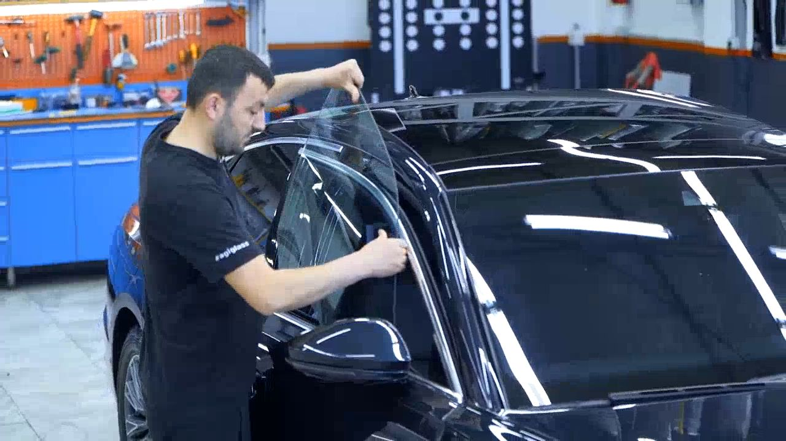
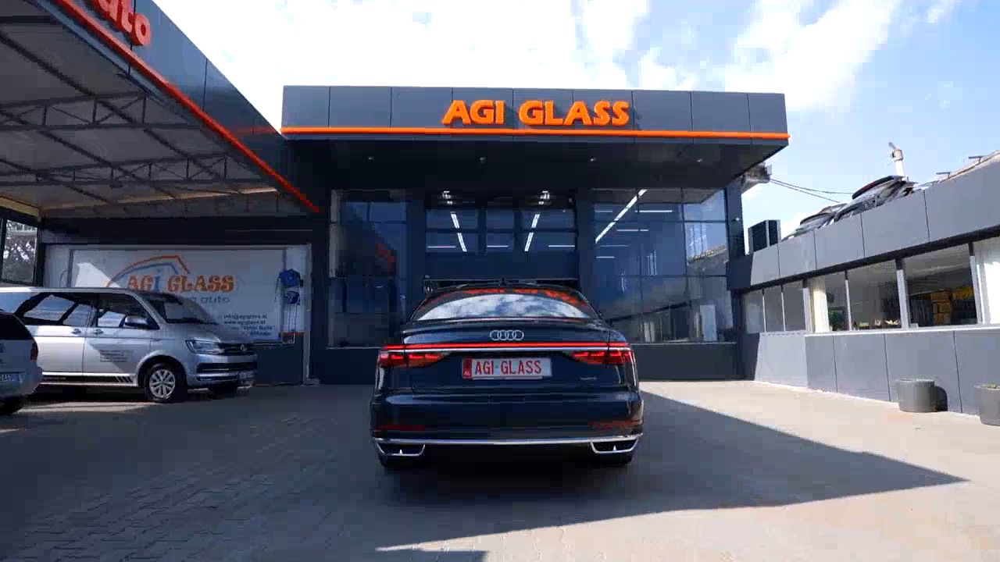
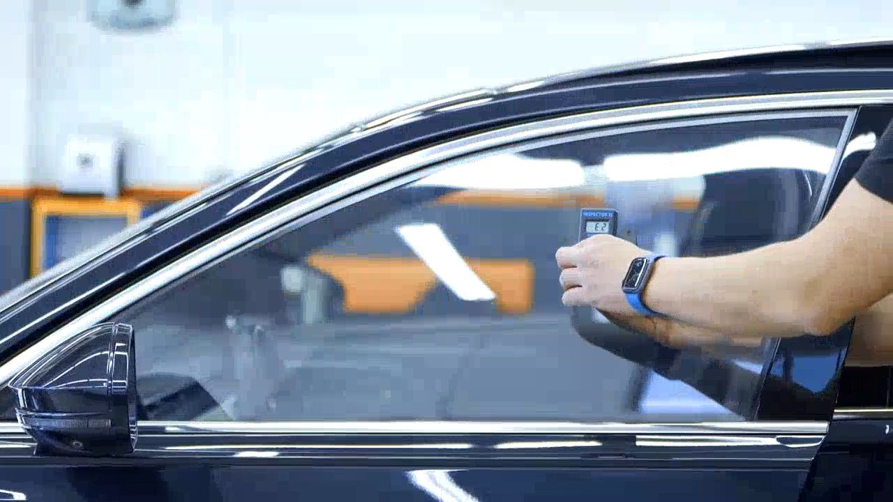
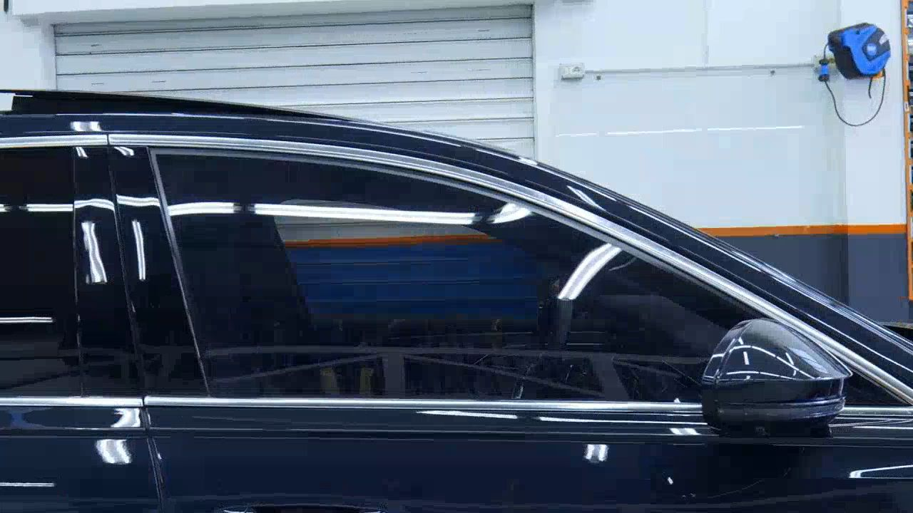
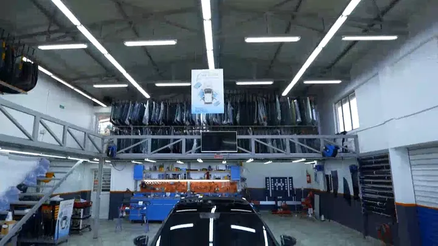
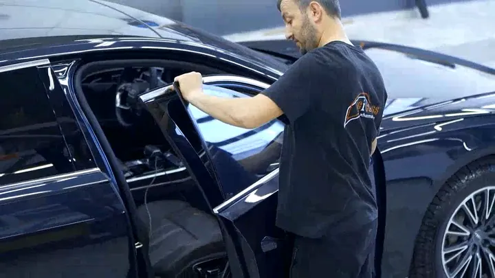
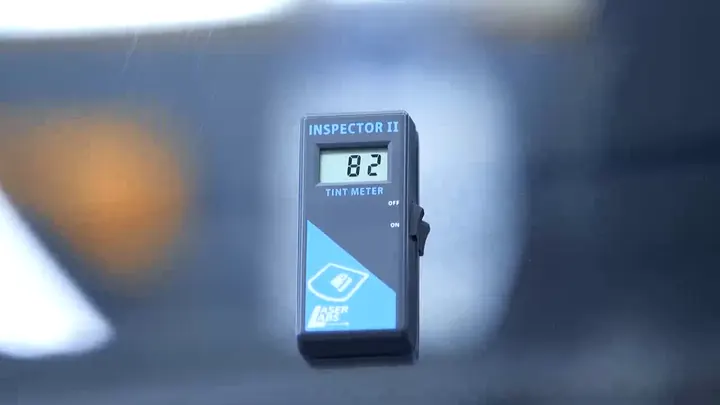
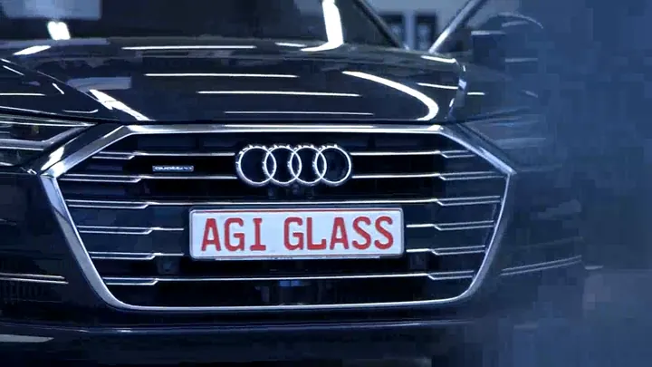

01
Zëvendësim xhami
Xhama të parë, anësorë dhe të pasëm, sipas kërkesës dhe opsioneve të automjetit tuaj: origjinalë ose alternativë.

AGI Glass · Shkodër · që nga 2009
Zëvendësim dhe riparim xhamash, veshje, kalibrim ADAS dhe deflektorë. Në punishten tonë në Rrugën Vehbi Balla ose me auto-oficinën e lëvizshme.
E hënë – e shtunë · 08:00 – 16:00
Shërbimet
Nga xhami i parë deri te deflektorët: shërbime për automjetin tuaj, në punishte ose aty ku ndodheni.

Xhama të parë, anësorë dhe të pasëm, sipas kërkesës dhe opsioneve të automjetit tuaj: origjinalë ose alternativë.

Filma për xhamat që ndihmojnë të bllokohen rrezet UV dhe IR, ulin vezullimin dhe japin më shumë privatësi.

Errësim i xhamave me teknologjinë e njohur si bombardim.
Dëmtimi i vogël riparohet më mirë sa më shpejt: pluhuri dhe uji e vështirësojnë rezultatin estetik.
Kur zëvendësohet xhami i parë, kamera e sistemeve të sigurisë duhet kalibruar. Këtë e bëjmë me kalibrimin ADAS.
Mbrojtëse ere dhe shiu me montim në kanalin e xhamit, me shumicë dhe pakicë.
Përveç punishtes, shumë kërkesa mund të kryhen aty ku ndodheni. Telefononi për të parë nëse vlen për rastin tuaj.
Pse AGI Glass
Xhami i parë mbështet kamerat e sistemeve ndihmëse. Prandaj pas zëvendësimit ofrojmë edhe kalibrimin ADAS.
Që nga 2009 punojmë me xhamat e automjeteve: zëvendësim, riparim, veshje, errësim dhe deflektorë.
Punishte në Shkodër, auto-oficinë e lëvizshme dhe orar i qartë: e hënë – e shtunë, 08:00 – 16:00.
Punishtja
Pamje nga video e vetë AGI Glass: fasada, punishtja dhe puna me xhamat.




Procesi
Një udhëzues i përgjithshëm. Hapat mund të ndryshojnë sipas automjetit dhe shërbimit.
Na telefononi ose ejani në punishte dhe tregoni automjetin dhe problemin.
Shohim dëmtimin dhe ju shpjegojmë cilat opsione ka.
Puna kryhet në punishte ose, kur është e mundur, me auto-oficinën e lëvizshme.
Automjeti ju dorëzohet dhe ju tregojmë çfarë u bë.
Shumicë & pakicë
AGI Glass shet xhama automjetesh dhe deflektorë si për klientë me shumicë, ashtu edhe me pakicë. Telefononi për disponueshmërinë dhe modelin që ju nevojitet.
Ofertë
Plotësoni automjetin, shërbimin dhe kontaktin. Në këtë parapamje formulari funksionon plotësisht, por nuk dërgon asgjë.
Kontakt
Ofertë
Plotësoni kërkesën në tre hapa. Në këtë parapamje ajo nuk dërgohet, por ju tregon saktësisht si do të funksiononte.
Kërko ofertë